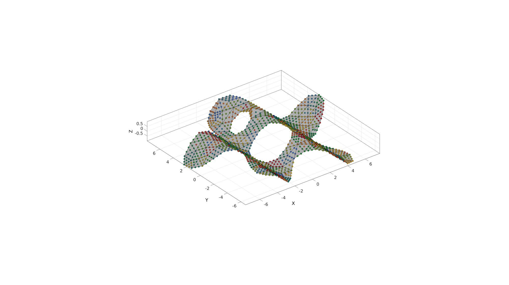
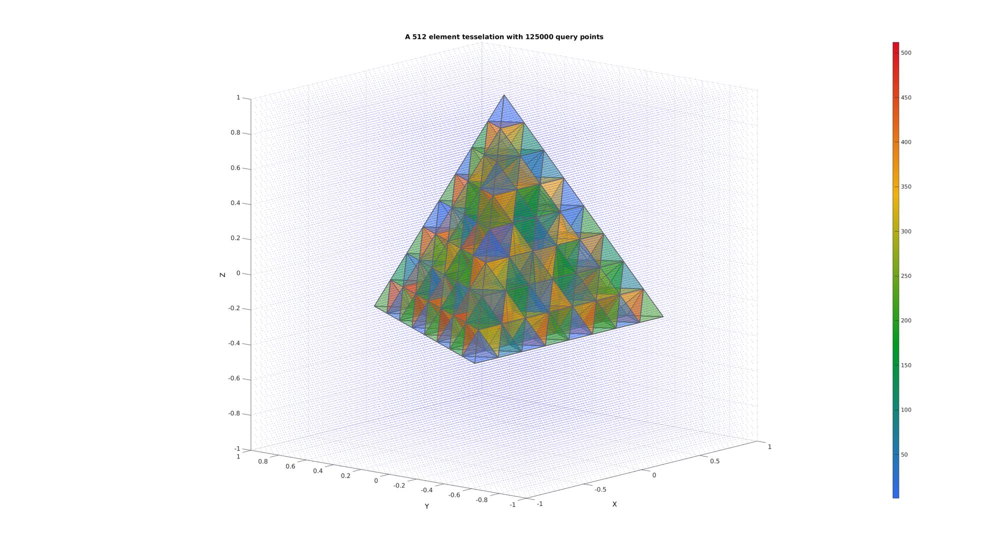
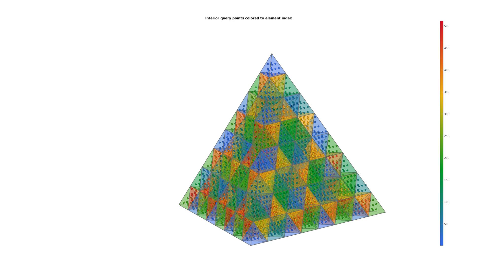
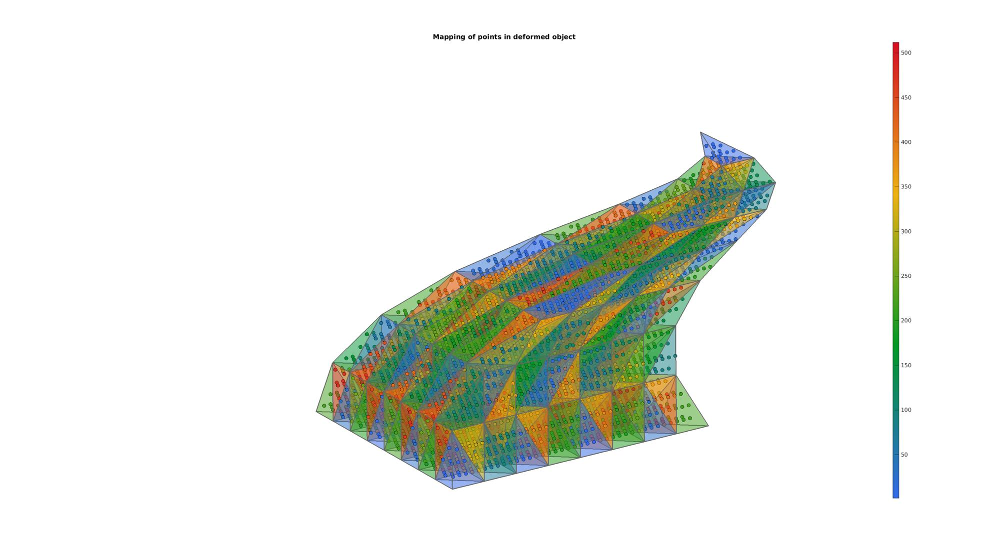
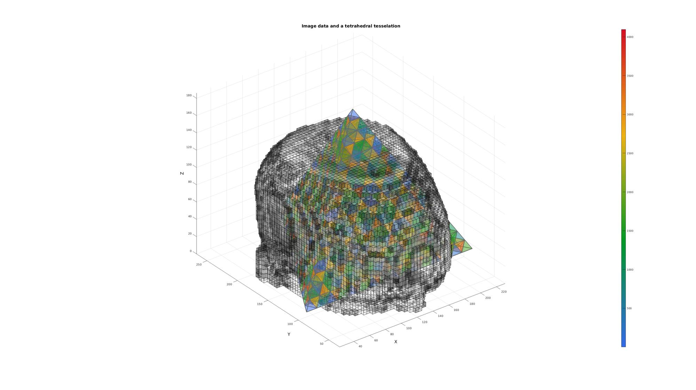
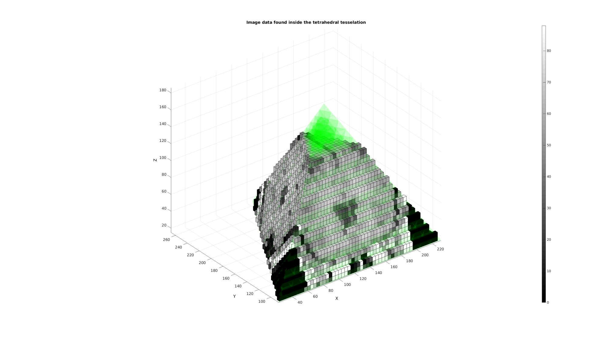
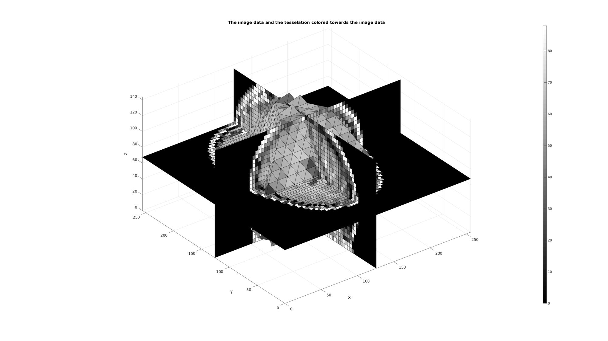

pointLocationTR
Below is a demonstration of the features of the pointLocationTR function
Contents
- Syntax
- Description
- Examples
- Example: Finding points inside a triangulated mesh
- Example: Finding points inside a tetrahedral mesh
- Example: Using barycentric coordinates to interpolate data (map points in deformed model)
- Example: Finding voxels inside a tetrahedral mesh
- Example: Interpolation of image data onto volume elements
Syntax
[TI,BC]=pointLocationTR(TR,QP,distCropOpt,chullCropOpt,waitbarOpt,toleranceMagnitude); [TI,BC]=pointLocationTR(TR,QP,optionStruct);
Description
This function finds the triangles or tetrahedrons in which the query points QP are contained. In addition it outputs the barycentric coordinates.
Default options: optionStructDef.distCropOpt=1; optionStructDef.chullCropOpt=1; optionStructDef.waitbarOpt=1; optionStructDef.toleranceMagnitude=0;
Examples
clear; close all; clc;
Plot settings
fontSize=15; faceColor1='g'; faceColor2='r'; faceAlpha1=0.3; faceAlpha2=1; edgeColor=0.4*ones(1,3); edgeWidth=2; markerSize=2; cMap=gjet(250);
Example: Finding points inside a triangulated mesh
%Boundary 1 ns=150; t=linspace(0,2*pi,ns); t=t(1:end-1); r=6+2.*sin(5*t); [x,y] = pol2cart(t,r); V1=[x(:) y(:)]; %Boundary 2 [x,y] = pol2cart(t,ones(size(t))); V2=[x(:) y(:)+4]; %Boundary 3 [x,y] = pol2cart(t,2*ones(size(t))); V3=[x(:) y(:)-0.5]; regionCell={V1,V2,V3}; %A region between V1 and V2 (V2 forms a hole inside V1) pointSpacing=1; [F,V]=regionTriMesh2D(regionCell,pointSpacing,1,0); V(:,3)=sin(V(:,1)); %Z coordinate [~,QP]=subtri(F,V,2);
Convert tesselation to triangulation class
TR = triangulation(F,V);
Use pointLocationTR to test points
optionStruct.toleranceMagnitude=1e-3; [ti,bc]=pointLocationTR(TR,QP,optionStruct); L=any(isnan(bc),2);
logicPlot=~isnan(ti); %Point selection logic cFigure; hold on; gpatch(F,V,'kw','k',0.5); plotV(QP,'k.','markerSize',25); plotV(QP(L,:),'r.','markerSize',50); scatterV(QP(logicPlot,:),50,ti(logicPlot),'fill','markerEdgeColor','k'); axisGeom; colormap(cMap(randperm(size(cMap,1))',:)); camlight headlight; drawnow;
Example: Finding points inside a tetrahedral mesh
Create a test tesselation
r=1; %Radius of tetrahedron circumsphere [V,~]=platonic_solid(1,r); E=[1 2 3 4]; n=3; E=E; V=V; for q=1:1:n [E,V]=subTet(E,V,1); end C=(1:size(E,1))';
Define query points
n=50; [X,Y,Z]=meshgrid(linspace(-r,r,n)); QP=[X(:) Y(:) Z(:)];
Plotting the test case
[F,CF]=element2patch(E,C); cFigure; title(['A ',num2str(size(E,1)),' element tesselation with ',num2str(size(QP,1)),' query points'],'FontSize',fontSize); xlabel('X','FontSize',fontSize); ylabel('Y','FontSize',fontSize); zlabel('Z','FontSize',fontSize); hold on; patch('Faces',F,'Vertices',V,'FaceColor','flat','CData',CF,'EdgeColor',edgeColor,'FaceAlpha',faceAlpha1,'lineWidth',edgeWidth); plotV(QP,'b.','MarkerSize',markerSize); colormap(cMap); colorbar; view(3); grid on; axis equal; axis tight; view([-50,12]) set(gca,'FontSize',fontSize); drawnow;
Convert tesselation to triangulation class
TR = triangulation(E,V);
Use pointLocationTR to test points
[ti,bc]=pointLocationTR(TR,QP,1,1,1);
Plot results and color points to the element number they are contained in
cFigure; title('Interior query points colored to element index','FontSize',fontSize); hold on; patch('Faces',F,'Vertices',V,'FaceColor','flat','CData',CF,'EdgeColor',edgeColor,'FaceAlpha',faceAlpha1,'lineWidth',edgeWidth); logicPlot=~isnan(ti); %Point selection logic % plotV(QP(logicPlot,:),'b.','MarkerSize',markerSize); scatter3(QP(logicPlot,1),QP(logicPlot,2),QP(logicPlot,3),75,ti(logicPlot),'fill','markerEdgeColor','k'); colormap(cMap); colorbar; view(3); axis equal; axis tight; axis off; view([-50,12]) set(gca,'FontSize',fontSize); drawnow;
Example: Using barycentric coordinates to interpolate data (map points in deformed model)
Changing shape
V=TR.Points;
V(:,1)=V(:,1)+0.5.*sin(pi*V(:,3));
V(:,2)=V(:,2)+0.5.*cos(pi*V(:,3));
% Fixing triangulation
TR = triangulation(E,V);
QPm = barycentricToCartesian(TR,ti(logicPlot),bc(logicPlot,:));
Plotting deformed shape
cFigure; title('Mapping of points in deformed object','FontSize',fontSize); xlabel('X','FontSize',fontSize); ylabel('Y','FontSize',fontSize); zlabel('Z','FontSize',fontSize); hold on; patch('Faces',F,'Vertices',V,'FaceColor','flat','CData',CF,'EdgeColor',edgeColor,'FaceAlpha',faceAlpha1,'lineWidth',edgeWidth); scatter3(QPm(:,1),QPm(:,2),QPm(:,3),75,ti(logicPlot),'fill','markerEdgeColor','k'); colormap(cMap); colorbar; view(3); axis equal; axis tight; axis off; view([-50,12]) set(gca,'FontSize',fontSize); drawnow;
Example: Finding voxels inside a tetrahedral mesh
Simulate image data
load mri; M=double(squeeze(D)); %example image data set clear D; M=M(1:2:end,1:2:end,:); voxelSize=2./[1,1,.4]; %Voxel size voxelSize(1)=voxelSize(1)*2; voxelSize(2)=voxelSize(2)*2; siz=size(M); %Image size FOV=siz.*voxelSize; %Field of view size
Get patch data
T_low=min(M(:))+((max(M(:))-min(M(:)))/10); %Threshold example logicVoxels=(M>T_low); [Fv,Vv,Cv]=ind2patch(logicVoxels,M,'vb'); Cv=Cv./max(Cv(:)); [Vv(:,1),Vv(:,2),Vv(:,3)]=im2cart(Vv(:,2),Vv(:,1),Vv(:,3),voxelSize);
Simulate a tesselated model
Vv_mean=mean(Vv,1); [V,~]=platonic_solid(1,max(FOV)/2); V=V+Vv_mean(ones(1,size(V,1)),:); E=[1 2 3 4]; n=4; for q=1:1:n [E,V]=subTet(E,V,1); end C=(1:size(E,1))';
[F,CF]=element2patch(E,C); cFigure; title('Image data and a tetrahedral tesselation','FontSize',fontSize); xlabel('X','FontSize',fontSize); ylabel('Y','FontSize',fontSize); zlabel('Z','FontSize',fontSize); hold on; patch('Faces',F,'Vertices',V,'FaceColor','flat','CData',CF,'EdgeColor',edgeColor,'FaceAlpha',faceAlpha1,'lineWidth',edgeWidth); hp1= patch('Faces',Fv,'Vertices',Vv,'FaceColor','flat','FaceVertexCData',Cv(:,ones(1,3)),'EdgeColor','k','FaceAlpha',faceAlpha1); colormap(cMap); colorbar; view(3); grid on; axis equal; axis tight; drawnow;
Setting up query points, in this case voxel coordinates
[Jv,Iv,Kv]=meshgrid(1:1:size(M,2),1:1:size(M,1),1:1:size(M,3)); %Voxel image coordinates [Xv,Yv,Zv]=im2cart(Iv,Jv,Kv,voxelSize); %Voxel cartesian coordinates Vq=[Xv(:) Yv(:) Zv(:)];
Find what elements the voxels are contained in
TR = triangulation(E,V); [TI,BC]=pointLocationTR(TR,Vq,1,1,1); % Reshaping the output TI leads in effect to a labeled image whereby each % voxels containes an index (or group/label number) for an element ML=reshape(TI',size(M));
Plotting the result
cFigure; title('Image data found inside the tetrahedral tesselation','FontSize',fontSize); xlabel('X','FontSize',fontSize);ylabel('Y','FontSize',fontSize); zlabel('Z','FontSize',fontSize); hold on; patch('Faces',F,'Vertices',V,'FaceColor','g','EdgeColor','none','FaceAlpha',0.1); logicVoxels=~isnan(ML); [Fm,Vm,Cm]=ind2patch(logicVoxels,M,'vb'); [Vm(:,1),Vm(:,2),Vm(:,3)]=im2cart(Vm(:,2),Vm(:,1),Vm(:,3),voxelSize); patch('Faces',Fm,'Vertices',Vm,'FaceColor','flat','CData',Cm,'EdgeColor','k','FaceAlpha',faceAlpha2); colormap gray; colorbar; axis equal; view(3); axis tight; grid on; set(gca,'FontSize',fontSize); drawnow;
Example: Interpolation of image data onto volume elements
Hence deriving image based intensity values becomes a matter of averaging across each element index label. If the voxels are sufficiently small with respect to the elements then this method actually partially takes into account partial voluming effects. i.e. the intensity of an element becomes the mean of the voxels contained within it which in some cases is more accurate then an interpolation which does not take into account the volumetric nature of the mesh (e.g. methods based on sampling/interpolating the intensities at the centre point or nodal points of the mesh only instead).
[E_color]=imlabelMean(M,ML); %The image based element colors
Plotting results
cFigure; title('The image data and the tesselation colored towards the image data','FontSize',fontSize); xlabel('X','FontSize',fontSize);ylabel('Y','FontSize',fontSize); zlabel('Z','FontSize',fontSize); hold on; [F,C]=element2patch(E,E_color); L=~isnan(C); patch('Faces',F(L,:),'Vertices',V,'FaceColor','flat','CData',C(L),'EdgeColor','k','FaceAlpha',faceAlpha2); L_plot=false(siz); L_plot(:,:,round(size(M,3)/2))=1; L_plot=L_plot; [Fm,Vm,Cm]=ind2patch(L_plot,double(M),'sk'); [Vm(:,1),Vm(:,2),Vm(:,3)]=im2cart(Vm(:,2),Vm(:,1),Vm(:,3),voxelSize); patch('Faces',Fm,'Vertices',Vm,'FaceColor','flat','CData',Cm,'EdgeColor','k','FaceAlpha',faceAlpha2); L_plot=false(siz);L_plot(round(size(M,1)/2),:,:)=1; L_plot=L_plot; [Fm,Vm,Cm]=ind2patch(L_plot,M,'si'); [Vm(:,1),Vm(:,2),Vm(:,3)]=im2cart(Vm(:,2),Vm(:,1),Vm(:,3),voxelSize); patch('Faces',Fm,'Vertices',Vm,'FaceColor','flat','CData',Cm,'EdgeColor','k','FaceAlpha',faceAlpha2); L_plot=false(siz);L_plot(:,round(size(M,2)/2),:)=1; L_plot=L_plot; [Fm,Vm,Cm]=ind2patch(L_plot,M,'sj'); [Vm(:,1),Vm(:,2),Vm(:,3)]=im2cart(Vm(:,2),Vm(:,1),Vm(:,3),voxelSize); patch('Faces',Fm,'Vertices',Vm,'FaceColor','flat','CData',Cm,'EdgeColor','k','FaceAlpha',faceAlpha2); colormap gray; colorbar; axis equal; view(3); axis tight; grid on; set(gca,'FontSize',fontSize); drawnow;

GIBBON www.gibboncode.org
Kevin Mattheus Moerman, gibbon.toolbox@gmail.com
GIBBON footer text
License: https://github.com/gibbonCode/GIBBON/blob/master/LICENSE
GIBBON: The Geometry and Image-based Bioengineering add-On. A toolbox for image segmentation, image-based modeling, meshing, and finite element analysis.
Copyright (C) 2019 Kevin Mattheus Moerman
This program is free software: you can redistribute it and/or modify it under the terms of the GNU General Public License as published by the Free Software Foundation, either version 3 of the License, or (at your option) any later version.
This program is distributed in the hope that it will be useful, but WITHOUT ANY WARRANTY; without even the implied warranty of MERCHANTABILITY or FITNESS FOR A PARTICULAR PURPOSE. See the GNU General Public License for more details.
You should have received a copy of the GNU General Public License along with this program. If not, see http://www.gnu.org/licenses/.